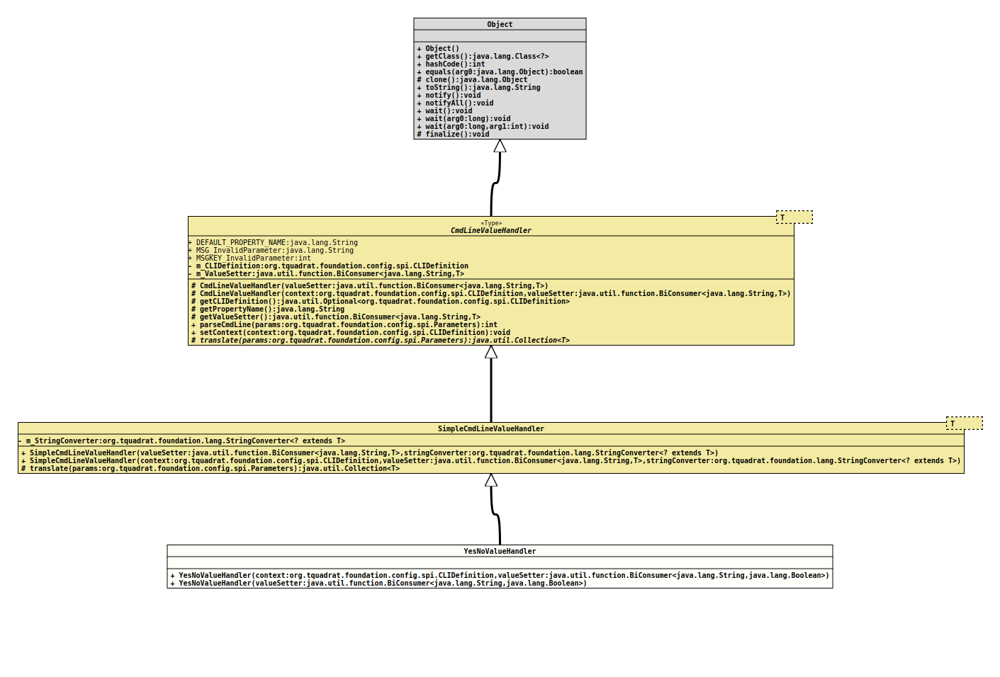

Class YesNoValueHandler
java.lang.Object
org.tquadrat.foundation.config.cli.CmdLineValueHandler<Boolean>
org.tquadrat.foundation.config.cli.SimpleCmdLineValueHandler<Boolean>
org.tquadrat.foundation.config.cli.YesNoValueHandler
@ClassVersion(sourceVersion="$Id: YesNoValueHandler.java 1078 2023-10-19 14:39:47Z tquadrat $")
@API(status=STABLE,
since="0.0.1")
public final class YesNoValueHandler
extends SimpleCmdLineValueHandler<Boolean>
An implementation of
CmdLineValueHandler
for boolean and
Boolean
values that does accept also "yes", "qui",
"ja", "sí", "sì", "да",
"sim", "tak" and more as true. Still any other
phrase and null are taken as false.- Author:
- Thomas Thrien (thomas.thrien@tquadrat.org)
- Version:
- $Id: YesNoValueHandler.java 1078 2023-10-19 14:39:47Z tquadrat $
- Since:
- 0.0.1
- UML Diagram
-

UML Diagram for "org.tquadrat.foundation.config.cli.YesNoValueHandler"
{kind=link}
-
Nested Class Summary
Nested ClassesModifier and TypeClassDescriptionprivate static final classAn implementation ofStringConverterthat translates 'yes' in various languages intotrue. -
Field Summary
Fields inherited from class org.tquadrat.foundation.config.cli.CmdLineValueHandler
DEFAULT_PROPERTY_NAME, MSG_InvalidParameter, MSGKEY_InvalidParameter -
Constructor Summary
ConstructorsConstructorDescriptionYesNoValueHandler(BiConsumer<String, Boolean> valueSetter) Creates a newYesNoValueHandlerinstance.YesNoValueHandler(CLIDefinition context, BiConsumer<String, Boolean> valueSetter) Creates a newYesNoValueHandlerinstance. -
Method Summary
Methods inherited from class org.tquadrat.foundation.config.cli.SimpleCmdLineValueHandler
translateMethods inherited from class org.tquadrat.foundation.config.cli.CmdLineValueHandler
getCLIDefinition, getPropertyName, getValueSetter, parseCmdLine, setContext
-
Constructor Details
-
YesNoValueHandler
Creates a newYesNoValueHandlerinstance.- Parameters:
context- The CLI definition that provides the context for this value handler.valueSetter- The function that places the translated value to the property.
-
YesNoValueHandler
Creates a newYesNoValueHandlerinstance.- Parameters:
valueSetter- The function that places the translated value to the property.
-